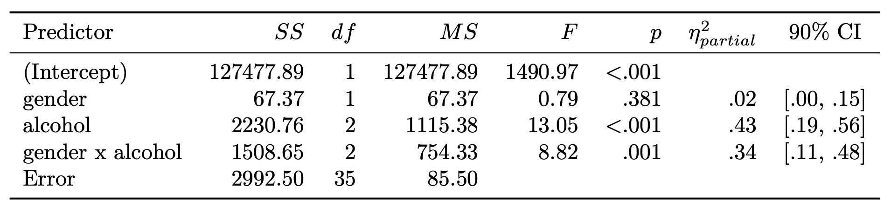
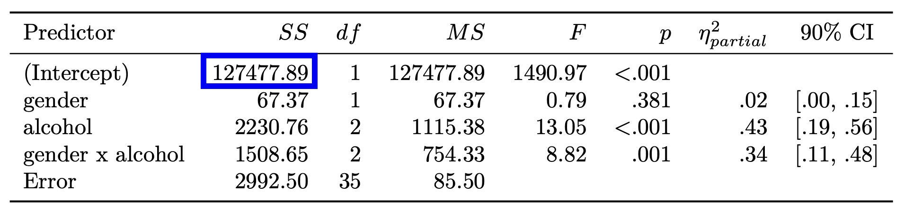
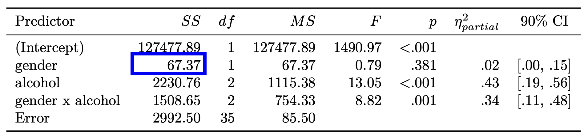
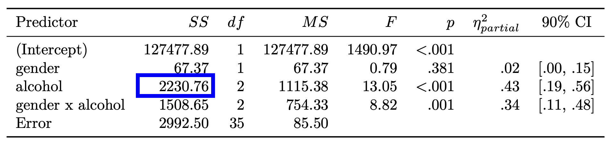
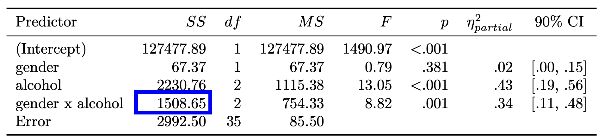
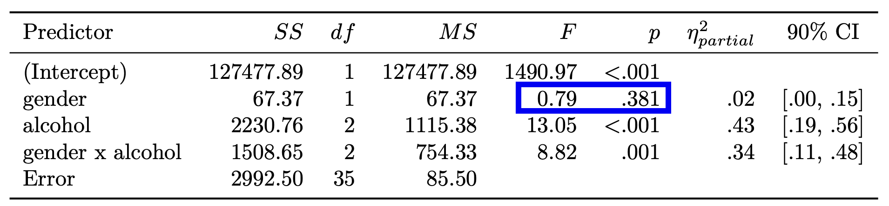
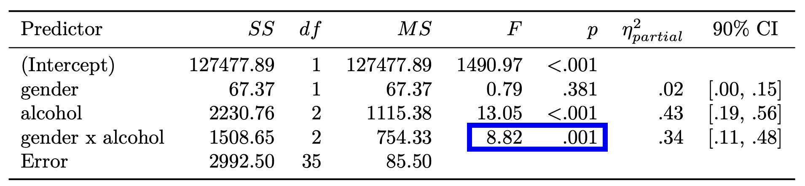

library(tidyverse)
library(janitor)
library(pracma)
library(recipes)
library(forcats)
library(tidymodels)
library(apaTables)2 Two-way ANOVA via Regression
2.1 Conducting a 2-wqy ANOVA
2.1.1 Activate packages
2.1.2 Load Data
gdata = read_csv("gdata.csv")2.1.3 Inspect Data
glimpse(gdata)Rows: 41
Columns: 3
$ attractiveness <dbl> 60, 60, 55, 60, 55, 70, 65, 60, 70, 65, 60, 60, 50, 55,…
$ gender <chr> "female", "female", "female", "female", "female", "fema…
$ alcohol <chr> "none", "none", "none", "none", "none", "pint2", "pint2…print(gdata) attractiveness gender alcohol
1 60 female none
2 60 female none
3 55 female none
4 60 female none
5 55 female none
6 70 female pint2
7 65 female pint2
8 60 female pint2
9 70 female pint2
10 65 female pint2
11 60 female pint2
12 60 female pint2
13 50 female pint2
14 55 female pint4
15 65 female pint4
16 70 female pint4
17 55 female pint4
18 55 female pint4
19 60 female pint4
20 50 female pint4
21 50 female pint4
22 50 male none
23 55 male none
24 80 male none
25 65 male none
26 70 male none
27 75 male none
28 75 male none
29 65 male none
30 45 male pint2
31 60 male pint2
32 85 male pint2
33 65 male pint2
34 70 male pint2
35 70 male pint2
36 80 male pint2
37 60 male pint2
38 30 male pint4
39 30 male pint4
40 30 male pint4
41 55 male pint42.2 Make factors
gdata <- gdata %>%
mutate(gender = as_factor(gender)) %>%
mutate(alcohol = as_factor(alcohol))
glimpse(gdata)Rows: 41
Columns: 3
$ attractiveness <dbl> 60, 60, 55, 60, 55, 70, 65, 60, 70, 65, 60, 60, 50, 55,…
$ gender <fct> female, female, female, female, female, female, female,…
$ alcohol <fct> none, none, none, none, none, pint2, pint2, pint2, pint…2.3 Conducting the analysis
options(contrasts = c("contr.sum", "contr.poly"))
lm_output <- lm(attractiveness ~ gender*alcohol, data = gdata)table1 <- apa.aov.table(lm_output, table.number = 1)
apa.save("table1aov.doc", table1)
2.4 Regression becoming ANOVA
Let’s load a new data set that has some contrast columns created already.
gdata <- read_csv("gdata_contrasts.csv")2.4.1 Gender contrasts
In R when you use the line:
options(contrasts = c("contr.sum", "contr.poly"))It efffects runs the contr.sum() command on each factor column, when a regression is run, and creates contrasts based on the number of levels of each factor. For example, the sex factor, with levels, causes the command below to be run.
contr.sum(2) [,1]
1 1
2 -1These rules are applied to the gender column. We create a new column called sex where this rule has been applied. In the output below, I have already applied this rule and put the result in the sex column. Normally this happens “under the hood” and you don’t see it. Notice how every female is coded 1 in the sex column where as males are coded -1 in the sex column; consistent with the contr.sum(2) command.
gdata %>%
select(attractiveness, gender, sex) %>%
as.data.frame() attractiveness gender sex
1 60 female 1
2 60 female 1
3 55 female 1
4 60 female 1
5 55 female 1
6 70 female 1
7 65 female 1
8 60 female 1
9 70 female 1
10 65 female 1
11 60 female 1
12 60 female 1
13 50 female 1
14 55 female 1
15 65 female 1
16 70 female 1
17 55 female 1
18 55 female 1
19 60 female 1
20 50 female 1
21 50 female 1
22 50 male -1
23 55 male -1
24 80 male -1
25 65 male -1
26 70 male -1
27 75 male -1
28 75 male -1
29 65 male -1
30 45 male -1
31 60 male -1
32 85 male -1
33 65 male -1
34 70 male -1
35 70 male -1
36 80 male -1
37 60 male -1
38 30 male -1
39 30 male -1
40 30 male -1
41 55 male -13 Alcohol contrasts
contr.sum(3) [,1] [,2]
1 1 0
2 0 1
3 -1 -1In the output below, I have already applied this rule and put the result in the alc1 and alc2 columns. Normally this happens “under the hood” and you don’t see it. Notice how every levels of alcohol are coded using this scheme; consistent with the contr.sum(3) command.
gdata %>%
select(attractiveness, alcohol, alc1, alc2) %>%
as.data.frame() attractiveness alcohol alc1 alc2
1 60 none 1 0
2 60 none 1 0
3 55 none 1 0
4 60 none 1 0
5 55 none 1 0
6 70 pint2 0 1
7 65 pint2 0 1
8 60 pint2 0 1
9 70 pint2 0 1
10 65 pint2 0 1
11 60 pint2 0 1
12 60 pint2 0 1
13 50 pint2 0 1
14 55 pint4 -1 -1
15 65 pint4 -1 -1
16 70 pint4 -1 -1
17 55 pint4 -1 -1
18 55 pint4 -1 -1
19 60 pint4 -1 -1
20 50 pint4 -1 -1
21 50 pint4 -1 -1
22 50 none 1 0
23 55 none 1 0
24 80 none 1 0
25 65 none 1 0
26 70 none 1 0
27 75 none 1 0
28 75 none 1 0
29 65 none 1 0
30 45 pint2 0 1
31 60 pint2 0 1
32 85 pint2 0 1
33 65 pint2 0 1
34 70 pint2 0 1
35 70 pint2 0 1
36 80 pint2 0 1
37 60 pint2 0 1
38 30 pint4 -1 -1
39 30 pint4 -1 -1
40 30 pint4 -1 -1
41 55 pint4 -1 -13.0.1 Interaction contrasts
We also need contrasts for the interaction. We create the interaction contrasts by multiplying the columns for sex, alc1, and alc2. You can see how we do so in the code below.
gdata <- gdata %>%
mutate(int1 = sex*alc1,
int2 = sex*alc2)Now check out the full coding off all predictors. When the regression is run, and the ANOVA results created, these are the columns that are actually analyzed.
gdata %>%
select(attractiveness, sex, alc1, alc2, int1, int2) %>%
as.data.frame() attractiveness sex alc1 alc2 int1 int2
1 60 1 1 0 1 0
2 60 1 1 0 1 0
3 55 1 1 0 1 0
4 60 1 1 0 1 0
5 55 1 1 0 1 0
6 70 1 0 1 0 1
7 65 1 0 1 0 1
8 60 1 0 1 0 1
9 70 1 0 1 0 1
10 65 1 0 1 0 1
11 60 1 0 1 0 1
12 60 1 0 1 0 1
13 50 1 0 1 0 1
14 55 1 -1 -1 -1 -1
15 65 1 -1 -1 -1 -1
16 70 1 -1 -1 -1 -1
17 55 1 -1 -1 -1 -1
18 55 1 -1 -1 -1 -1
19 60 1 -1 -1 -1 -1
20 50 1 -1 -1 -1 -1
21 50 1 -1 -1 -1 -1
22 50 -1 1 0 -1 0
23 55 -1 1 0 -1 0
24 80 -1 1 0 -1 0
25 65 -1 1 0 -1 0
26 70 -1 1 0 -1 0
27 75 -1 1 0 -1 0
28 75 -1 1 0 -1 0
29 65 -1 1 0 -1 0
30 45 -1 0 1 0 -1
31 60 -1 0 1 0 -1
32 85 -1 0 1 0 -1
33 65 -1 0 1 0 -1
34 70 -1 0 1 0 -1
35 70 -1 0 1 0 -1
36 80 -1 0 1 0 -1
37 60 -1 0 1 0 -1
38 30 -1 -1 -1 1 1
39 30 -1 -1 -1 1 1
40 30 -1 -1 -1 1 1
41 55 -1 -1 -1 1 13.1 Degrees of freedom
When you look at the the columns in the above output notice the number of columns we use for each predictor corresponds the degrees of freedom for that predictor.
| Predictor | df | Number of contrast columns | Constrast column names |
|---|---|---|---|
| sex | \(df_a = a-1 = 2 -1 = 1\) | 1 | sex |
| alcohol | \(df_b = b-1 = 3 -1 = 2\) | 2 | alc1, alch2 |
| sex by alcohol | \(df_{int} = df_a * df_b = (a-1)(b-1)=1(2)=2\) | 2 | int1, int2 |
3.2 Logic overview
To get ANOVA results that are consistent with what are typically used in psychology you need to 1) Specify the contr.sum() contrast 2) Calculate the Sum of Squares using the logic for Type III Sum of Squares
When you run an ANOVA using the command:
options(contrasts = c("contr.sum", "contr.poly"))
lm_output <- lm(attractiveness ~ gender*alcohol, data = gdata)R actually runs a whole series of regressions for you and combines them into the single output table you saw above. These models fall into two categories Full and Restricted Models.
3.3 Full and restricted models
3.3.1 Full model
First, the Full Model is run that includes all of the predictor columns:
lm_full <- lm(attractiveness ~ sex + alc1 + alc2 + int1 + int2, data = gdata)3.3.2 Restricted models
Next a series of restricted models are run that excluded an effect of interest for each restricted model.
lm_restricted_no_sex <- lm(attractiveness ~ alc1 + alc2 + int1 + int2, data = gdata)
lm_restricted_no_alcohol <- lm(attractiveness ~ sex + int1 + int2, data = gdata)
lm_restricted_no_interaction <- lm(attractiveness ~ sex + alc1 + alc2 , data = gdata)
lm_restricted_no_intercept <- lm(attractiveness ~ sex + alc1 + alc2 + int1 + int2 - 1, data = gdata)3.4 Logic: Model Comparison
The ANOVA table is created by comparing each of these restricted models to the full model. For example, to determine the main effect for gender we compare the model lm_restricted_no_sex to the model lm_full. If lm_full accounts for substantially more variance than lm_restricted_no_sex it is significant.
This is effectively identical to when we looked at comparing two regression models previous. Using that logic, we could just write the code:
# try this, it works!
library(apaTables)
apa.reg.table(lm_restricted_no_sex, lm_restricted_all)The result would tell us if the main effect of sex is significant. The logic of calculating things this way is the Type III Sum of Squares logic. HOWEVER, we don’t tend to use the output in the form provided in this type of table. Rather the output if reformatted to by consistent with the way ANOVA’s are typically presented. The next few sections show you how the table below is created:
3.5 Sum of Squares for Each Predictor
Notice the first column of the ANOVA table above is the Sum of Squares column. Hower are those values calculated? Let’s consider the example of alcohol as a predictor. We want to determine the Sum of Squares for alcohol.
We begin by calculating predicted scores for the Full Model (lm_full):
\[ \hat{y}_{\text{full}} = b_0 +b_1sex + b_2alc1 + b_3alc2 + b_4int1 + b_5int2 \]
Next, we calculate the predicted scores for the alcohol restricted model (lm_restricted_no_alcohol) \[ \hat{y}_{\text{restricted no alcohol}}= b_0 +b_1sex + b_2int1 + b_3int2 \]
Then we calculated the difference between these two sets of predicted scores:
\[ \hat{y}_{\text{difference}} = \hat{y}_{\text{full}} - \hat{y}_{\text{restricted no alcohol}} \]
Then we square these values and add them up.
\[ SS_{alcohol} = \sum \hat{y}_{\text{difference}}^2 \]
We follow this process below for each predictor (including the intercept).
3.5.1 Intercept
## Sum of squares intercept
sum( ( predict(lm_full) - predict(lm_restricted_no_intercept) )^2 )[1] 127477.9Compare the Sum of Squares values in the above output to the one in the table below.

3.5.2 Sex
## Sum of squares sex
sum( ( predict(lm_full) - predict(lm_restricted_no_sex) )^2 )[1] 67.36842Compare the Sum of Squares values in the above output to the one in the table below.

3.5.3 Alcohol
## Sum of squares alcohol
sum( ( predict(lm_full) - predict(lm_restricted_no_alcohol) )^2 )[1] 2230.757Compare the Sum of Squares values in the above output to the one in the table below.

3.5.4 Interaction
## Sum of squares interaction
sum( ( predict(lm_full) - predict(lm_restricted_no_interaction) )^2 )[1] 1508.651Compare the Sum of Squares values in the above output to the one in the table below.

3.5.5 Error
## Sum of squares error
sum( lm_full$residuals^2 )[1] 2992.5Compare the Sum of Squares values in the above output to the one in the table below.

3.6 SS to ANOVA
Based on the above analyses we know the Sum of Squares and the degrees of freedom for everthing. We can put that information in the table below.
| Predictor | \(SS\) | \(df\) | MS\(=\frac{SS}{df}\) | F\(=\frac{MS}{MS_{error}}\) | p |
|---|---|---|---|---|---|
| (Intercept) | 127477.89 | 1 | |||
| sex | 67.37 | 1 | |||
| alcohol | 2230.76 | 2 | |||
| sex by alcohol | 1508.65 | 2 | |||
| Error | 2992.5 | 35 |
A few hand calculations, and an \(F\) to \(p\)-value lookup table, provides us with the rest of the information we need:
| Predictor | \(SS\) | \(df\) | MS\(=\frac{SS}{df}\) | F\(=\frac{MS}{MS_{error}}\) | p |
|---|---|---|---|---|---|
| (Intercept) | 127477.89 | 1 | \(\frac{127477.89}{1}=127477.89\) | \(\frac{127477.89}{85.5}= 1490.97\) | <.001 |
| sex | 67.37 | 1 | \(\frac{67.37}{1}=67.37\) | \(\frac{67.37}{85.5}= 0.79\) | .381 |
| alcohol | 2230.76 | 2 | \(\frac{2230.76}{2}=1115.38\) | \(\frac{1115.38}{85.5}=13.05\) | <.001 |
| sex by alcohol | 1508.65 | 2 | \(\frac{1508.65}{2}= 754.325\) | \(\frac{754.325}{85.5}=8.82\) | .001 |
| Error | 2992.5 | 35 | \(\frac{2992.5}{35}= 85.5\) |
3.7 F and p values for predictor
3.7.1 Sex
anova(lm_restricted_no_sex, lm_full)Analysis of Variance Table
Model 1: attractiveness ~ alc1 + alc2 + int1 + int2
Model 2: attractiveness ~ sex + alc1 + alc2 + int1 + int2
Res.Df RSS Df Sum of Sq F Pr(>F)
1 36 3059.9
2 35 2992.5 1 67.368 0.7879 0.3808Compare the \(F-\) and \(p\)-values in the above output to those in the table below.

3.7.2 Alcohol
anova(lm_restricted_no_alcohol, lm_full)Analysis of Variance Table
Model 1: attractiveness ~ sex + int1 + int2
Model 2: attractiveness ~ sex + alc1 + alc2 + int1 + int2
Res.Df RSS Df Sum of Sq F Pr(>F)
1 37 5223.3
2 35 2992.5 2 2230.8 13.045 5.843e-05 ***
---
Signif. codes: 0 '***' 0.001 '**' 0.01 '*' 0.05 '.' 0.1 ' ' 1Compare the \(F-\) and \(p\)-values in the above output to those in the table below.

3.7.3 Interaction
anova(lm_restricted_no_interaction, lm_full)Analysis of Variance Table
Model 1: attractiveness ~ sex + alc1 + alc2
Model 2: attractiveness ~ sex + alc1 + alc2 + int1 + int2
Res.Df RSS Df Sum of Sq F Pr(>F)
1 37 4501.2
2 35 2992.5 2 1508.7 8.8225 0.0007896 ***
---
Signif. codes: 0 '***' 0.001 '**' 0.01 '*' 0.05 '.' 0.1 ' ' 1Compare the \(F-\) and \(p\)-values in the above output to those in the table below.
